NeU/X
An AI co-pilot that turns creator goals into actionable plans.
Self-directed capstone project. AI research, Figma prototype, React final build with Claude Code.

Independent creators plan launches the same way founders plan startups: from scratch, every time.
Generic project managers don't know what a "book launch" is; generic email tools don't help plan the send.
Creators were stitching that plan together from half-integrated tools, building their own milestones by hand.
NeU/X works backward instead, starting from the goal, generating the milestones itself.
An AI co-pilot could turn one stated goal, "sell 1,000 books by Q2," directly into a milestone plan.
That same co-pilot could carry the plan through execution, drafting emails, checking them, surfacing results.
Creators would spend less time managing the plan, and more time doing the work it's for.
Research ran through Listen Labs: a screener survey scoped participants by creator type, then AI-moderated interview sessions ran on their own.
Responses were analyzed and coded by theme in CoLoop, then tagged in a working spreadsheet.
That research fed a journey map (built around a real persona, her frictions at each step, and the opportunities they pointed to) that the product's structure was designed against.
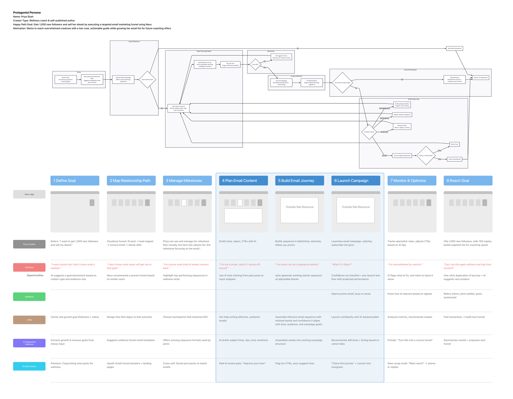
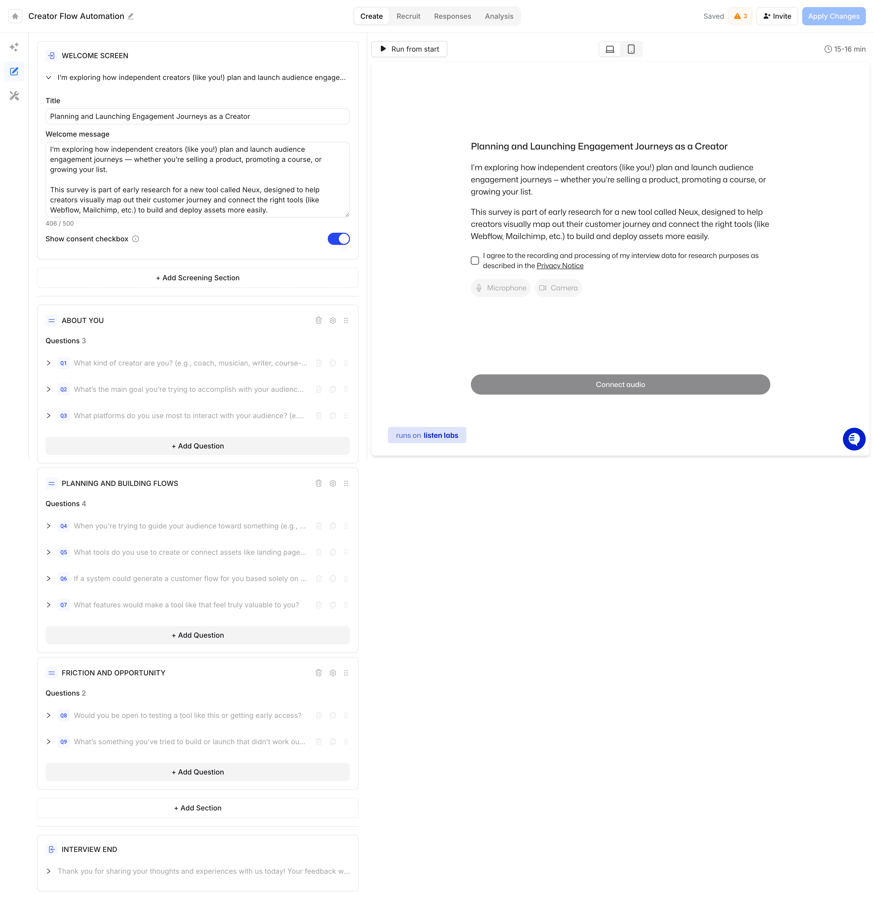
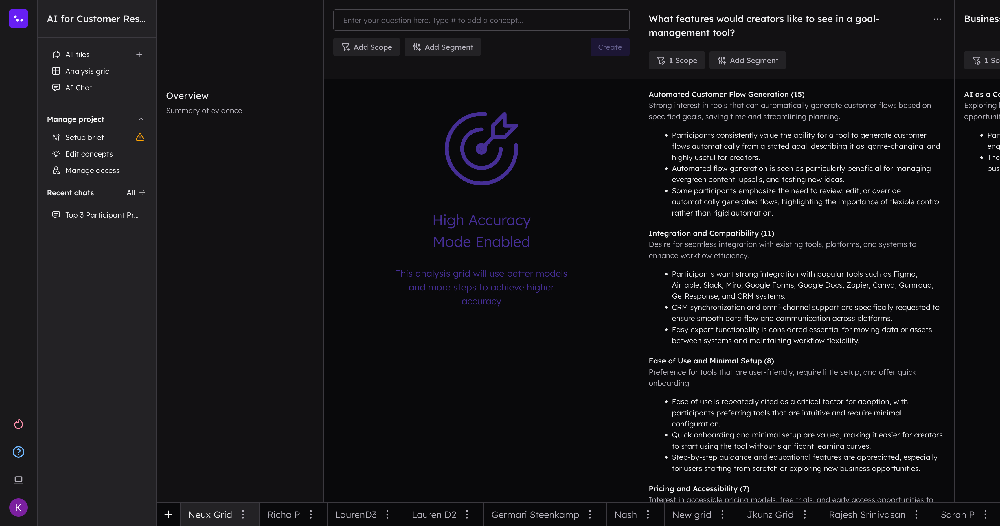
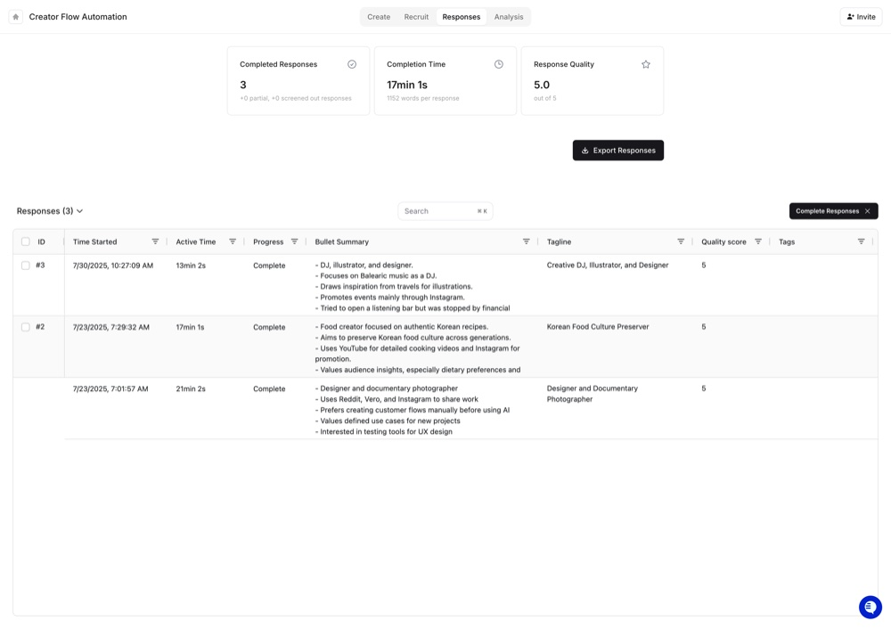
Early screens were roughed out in Uizard as low-fidelity black-and-white wireframes, working out the goal-to-milestone flow before any Figma design.
From there it moved temporarily into Figma directly against the journey map's 8 steps.
The AI co-pilot panel went through several passes on what it should actually say at each milestone, from a blank prompt to specific, contextual insight tied to what the creator had just done.
After the preliminary Figma designs to validate the proof of concept, I rebuilt it in React to better mimic a real application.
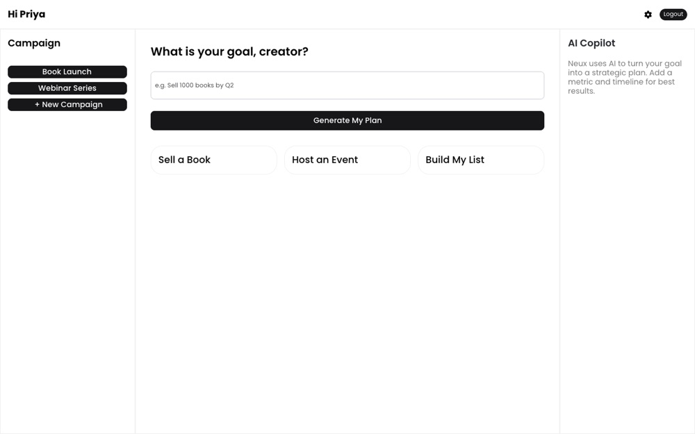
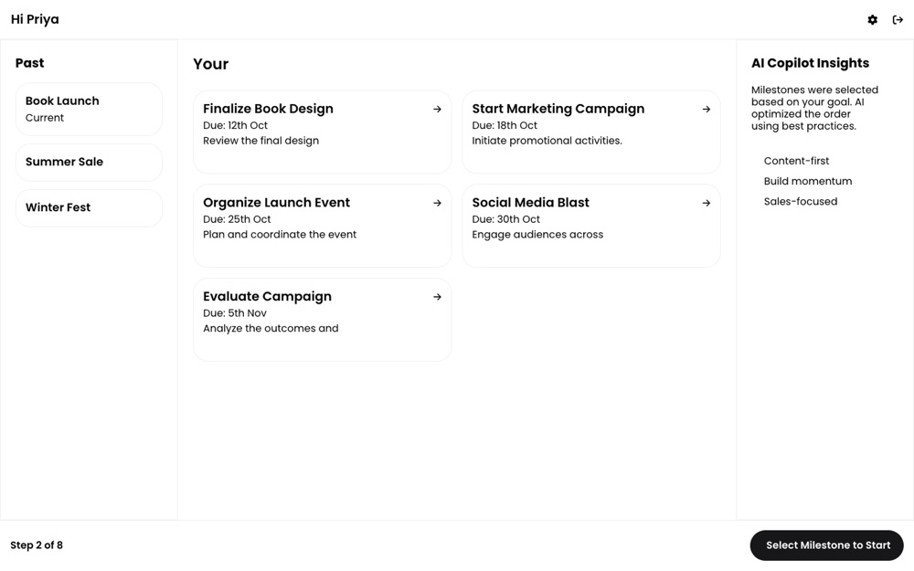
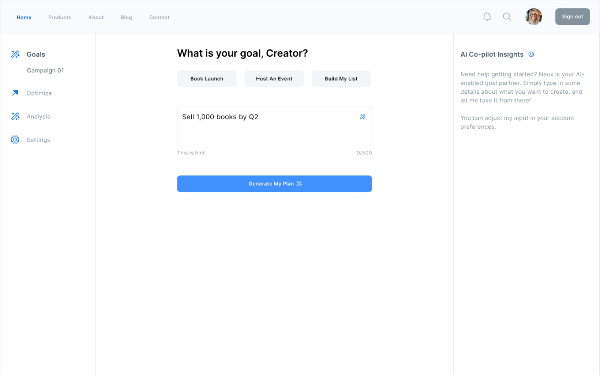
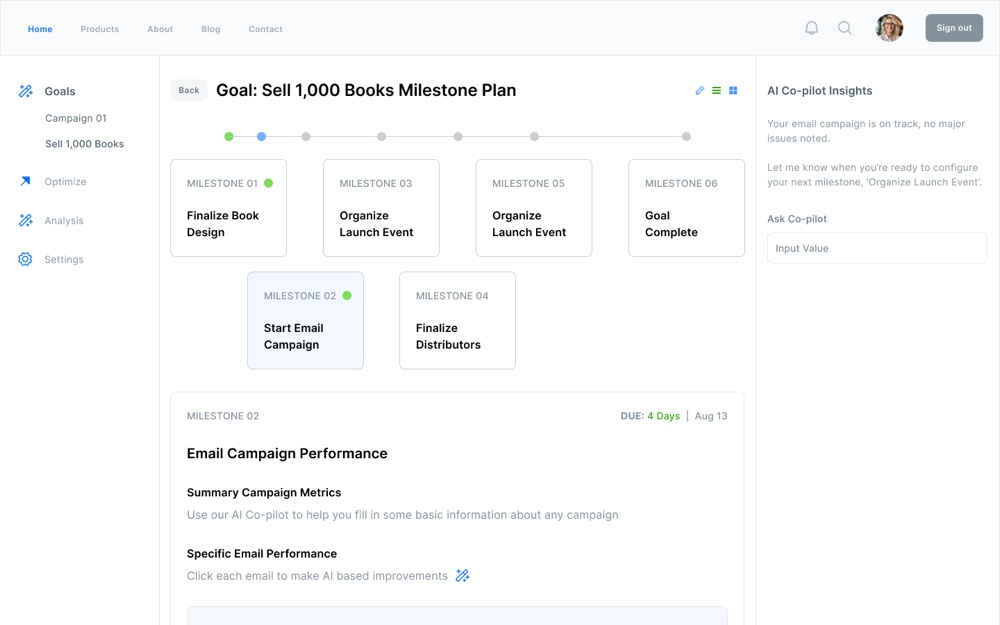
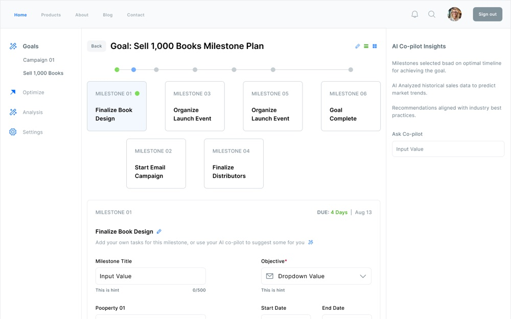
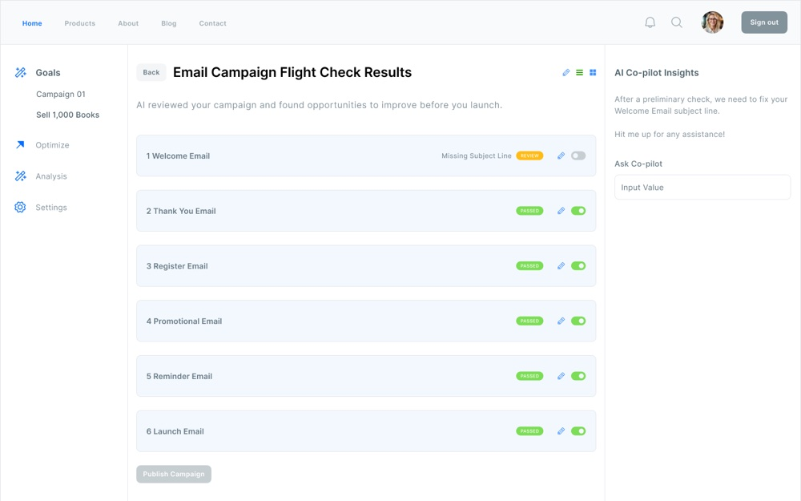
A React-based milestone dashboard with an AI co-pilot, and an email campaign flight check that catches problems before send.
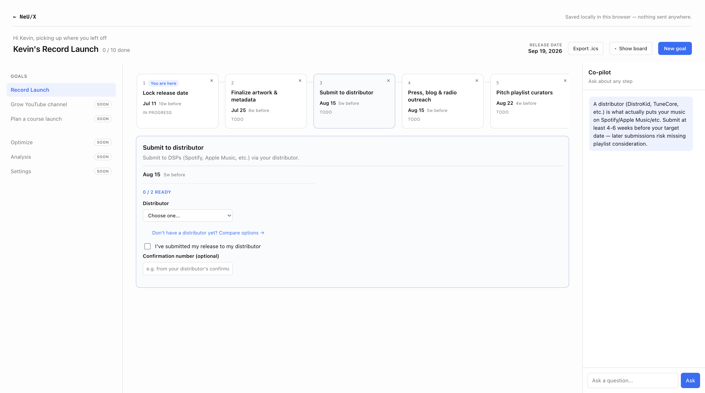
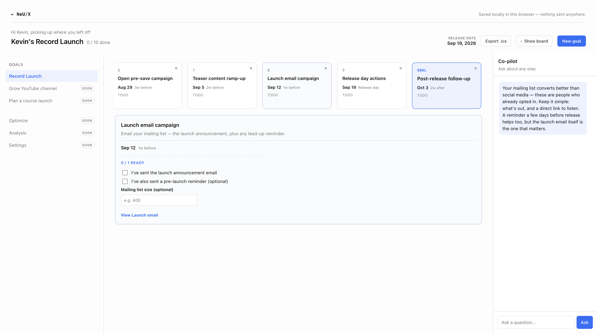
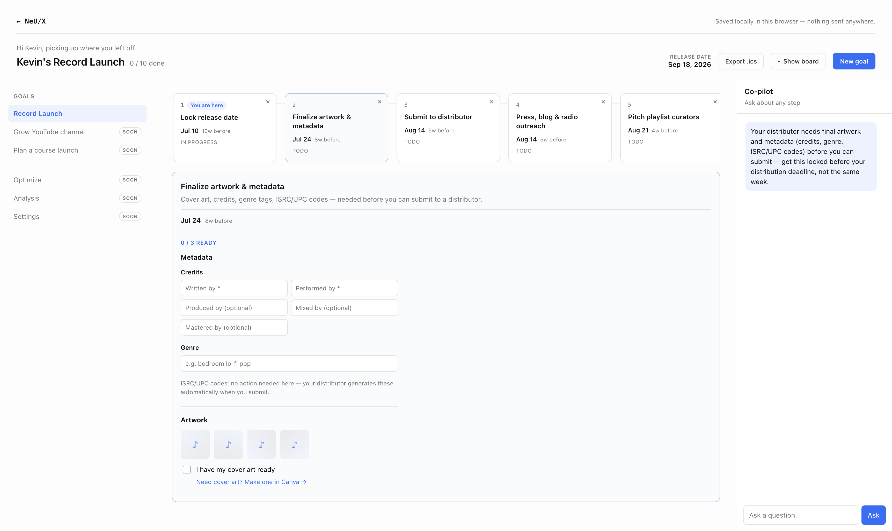
The real outcome was what this taught me about finding product-market fit: how to gather real evidence a problem exists and where the actual market opportunity sits, before designing a single screen.
NeU/X itself is a fledgling Figma prototype, one I'd like to take further whenever there's time.
- Capstone
- AI Product
- Figma → Code